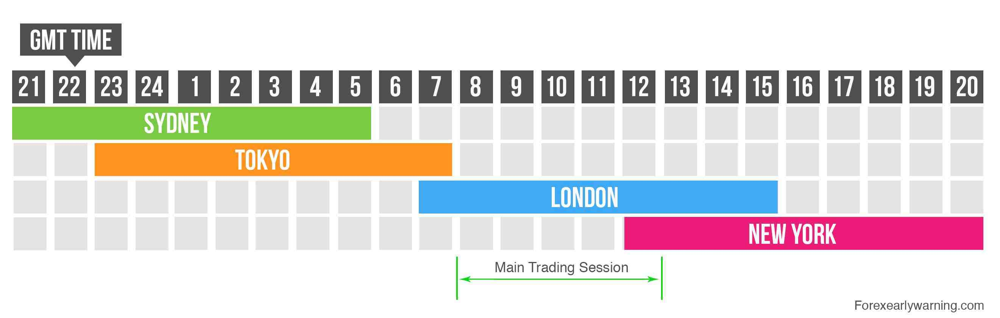

Forex Market Sessions
The forex market operates 24 hours a day, five days a week, across various financial centers worldwide. This continuous operation is due to the global nature of the forex market, with different trading sessions overlapping as they open and close in different time zones. Understanding the different forex market sessions and their characteristics is crucial for traders to optimize their trading strategies and take advantage of market opportunities.
The Four Major Forex Market Sessions:
Sydney Session:
Opening Hours: 9:00 PM - 6:00 AM GMT
The Sydney session marks the start of the forex trading day. Although it's the smallest of the major sessions, it sets the tone for the day, especially for currencies like the Australian Dollar (AUD) and New Zealand Dollar (NZD).
Characteristics: Lower volatility compared to other sessions, with fewer economic data releases. Good for trading AUD and NZD pairs.
Tokyo Session:
Opening Hours: 11:00 PM - 8:00 AM GMT
The Tokyo session is the second major session and is known for its liquidity and volatility, particularly for JPY pairs.
Characteristics: Increased activity in JPY pairs, such as USD/JPY, EUR/JPY, and GBP/JPY. Market moves can be influenced by Asian economic data and geopolitical events.
London Session:
Opening Hours: 7:00 AM - 4:00 PM GMT
The London session is the largest and most active forex trading session, with the highest trading volume.
Characteristics: High volatility and liquidity, especially for EUR, GBP, and CHF pairs. Overlaps with both the Tokyo and New York sessions, leading to significant market moves.
New York Session:
Opening Hours: 12:00 PM - 9:00 PM GMT
The New York session is the second most active session and overlaps with the London session, creating substantial trading volume and volatility.
Characteristics: High activity for USD pairs. Major economic news and data releases from the US can significantly impact the market.
Overlapping Sessions:
The most volatile periods in the forex market are during the overlaps between major sessions. These overlaps provide increased liquidity and the potential for significant price movements.
Conclusion
Understanding forex market sessions is essential for any trader looking to optimize their trading strategy. Each session has its unique characteristics and opportunities, and knowing when to trade can significantly impact your trading success. By aligning your trading activities with the most active and volatile periods, and by managing risk effectively, you can take full advantage of the forex market's 24-hour operation.